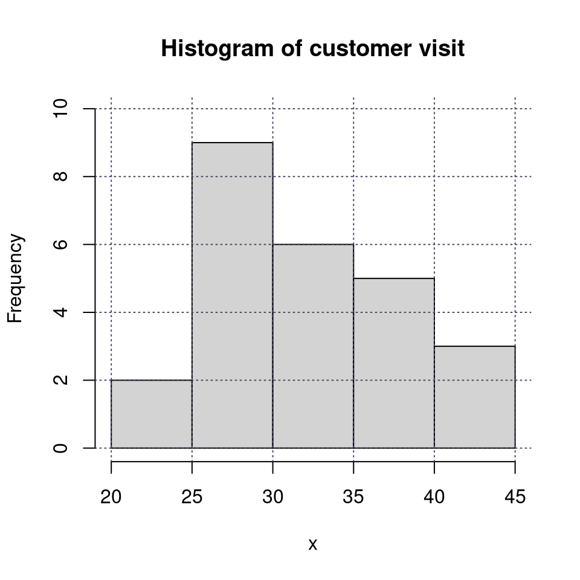
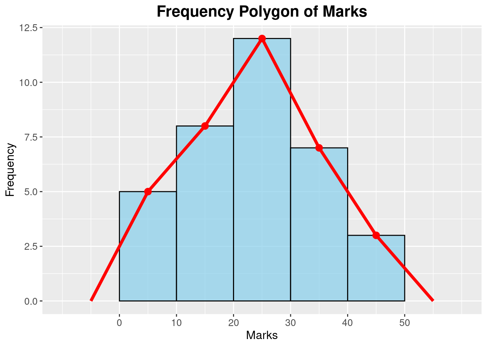
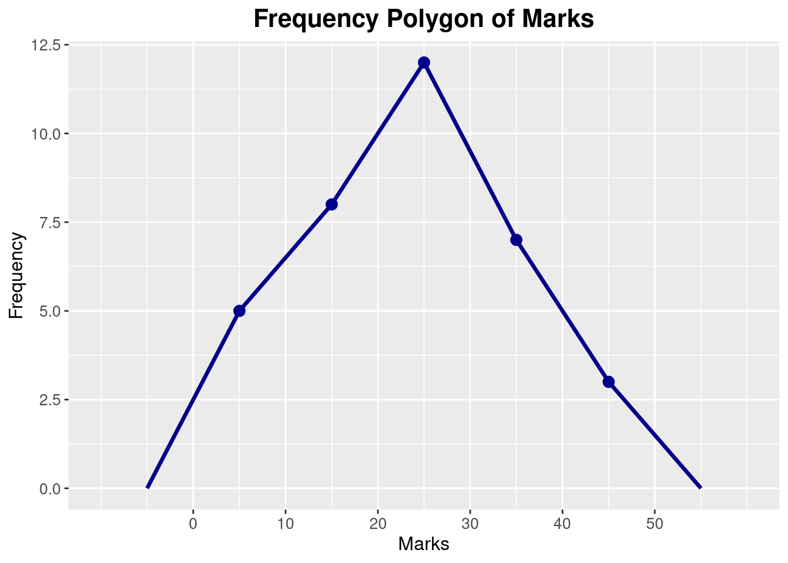
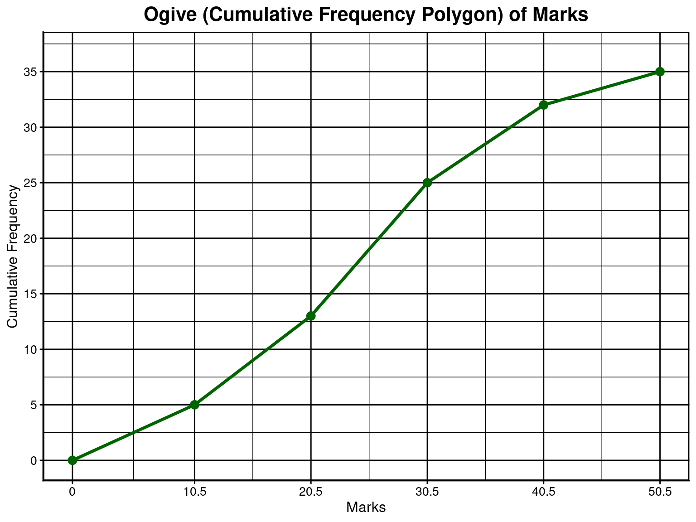

Elementary Statistics
Statistics and Probability
VII
Topics
- Frequency Distribution
- Histogram
- Mode
Information and Data
- Data: Raw, unstructured
- Information: Processed, organized, and structured data
- Temperature at various cities: 30, 31, 30, 29, 28, 27, 28, 29, 30, 31, 32, 33, 32, 31, 30, 29, 28, 27, 26, 26, 25, 25, 24, 24
- Lowest: 24, Highest: 33, \(\bar X = 28.7\)
- Which data and which information?
Sources of Data
- Primary: Obtained directly (not collected from someone else)
- Secondary: Using pre-collected data from someone else/some organization
- A researcher buys data from BMD to build a model of rainfall behavior
- A researcher runs an experiment to measure speed of light using a novel technique.
- A researcher makes use of the data generated by the one in example 2
Organized vs Unorganized data
- Unorganized: Messy, chaotic, raw
- Organized: Formatted, easy to understand (sorted/tabluated)
Frequency Distribution Example
Marks of students in a class
| Class Interval | Frequency |
|---|---|
| 41 - 50 | 5 |
| 51 - 60 | 10 |
| 61 - 70 | 18 |
| 71 - 80 | 12 |
| 81 - 90 | 8 |
| 91 - 100 | 3 |
- How does it help us?
Frequency Distribution
Three things required
- Range \(R=X_H-X_L+1\)
- Class Interval (CI)
- No. of class, \(k = \frac{R}{CI}\)
- CI=?
Make a frequency distribution
The number of daily customer visits to a supershop over 25 consecutive days:
32, 28, 35, 41, 29, 30, 38, 45, 27, 25
33, 40, 31, 29, 36, 42, 26, 24, 34, 39,
30, 28, 37, 33, 29
Discrete vs Continuous Intervals
- (11-15), (16-20), (21-25)
- (10-20), (20-30), (30-40)
- What is the problem with discrete intervals?
- What about interval width in each case?
Histogram

Explain the histogram
IX-X Statistics
Chapter Overview
- Data presentation
- Frequency and cumulative frequency
- Frequency distribution
- Variable types
- Frequency polygon
- Ogive
- Central Tendency
- Arithmetic Mean (AM)
- Short-cut method
- Weighetd Mean
- Median
- Mode
Why Organizing is Required
The ages of 20 participants in a fitness program were recorded and found to be as follows:
25, 30, 28, 35, 40, 38, 26, 32, 36, 31,
27, 33, 29, 41, 42, 37, 34, 39, 43, 45
What do understand by looking?
Cumulative Frequency
| Marks | Frequency | Cumulative Frequency |
|---|---|---|
| 0 - 10 | 5 | 5 |
| 11 - 20 | 8 | 13 |
| 21 - 30 | 12 | 25 |
| 31 - 40 | 7 | 32 |
| 41 - 50 | 3 | 35 |
Frequency Distribution
Three things required
- \(Range, R = X_H - X_L\)
- No. of classes (k) &
- Class Interval (CI)
- Let k or CI & find the other
- \(CI = \frac{Range}{\text{Number of classes (k)}}\)
- \(\text{Number of classes, k}= \frac{Range}{\text{CI}}\)
To Make Frequency Distribution
- Make the intervals
- Use Tally symbols to get frequencies
Variable types
Discrete
- Isolated/specific values
- Not just Integers!
- Example: number of goals, grade in a subject
Continuous
- Any value between any two value possible
- Example: Height, radius
Frequency polygon

Clean Polygon

Ogive

Arithmetic Mean
- \(\bar{X} = \displaystyle \frac{\sum_{i=1}^{n} X_i}{n}\)
- Grouped/Classified data: \(\displaystyle \bar{X} = \frac{\sum_{i=1}^{k} f_i x_i}{\sum_{i=1}^{k} f_i} = \frac{\sum_{i=1}^{k} f_i x_i}{N}\)
Grouped Data
\(\displaystyle \bar{X} = \frac{\sum_{i=1}^{k} f_i x_i}{\sum_{i=1}^{k} f_i} = \frac{\sum_{i=1}^{k} f_i x_i}{N}\)
Find AM
- 2, 2, 3, 4, 5, 6, 6
- Make a table
Weighted Mean
Weighetd mean: \(\displaystyle \bar{X}_w = \frac{\sum_{i=1}^{n} w_i X_i}{\sum_{i=1}^{n} w_i}\)
- Weight: Importance of marks by judge
- Credit of subject/course
| Course | Marks | Credit |
|---|---|---|
| Simulation | 83 | 2 |
| Probability | 75 | 4 |
| Econometrics | 92 | 3 |
*Credit is weight
Find \(\bar X\)
| Interval | Frequency |
|---|---|
| 1 - 10 | 7 |
| 11 - 20 | 14 |
| 21 - 30 | 21 |
| 31 - 40 | 17 |
| 41 - 50 | 9 |
| 51 - 60 | 4 |
- USe mid-values as \(x_i\)
AM Short-cut Method
Concept
Find \(\bar x\)
1000, 1010, 1020, 1030, 1040
Be Smart!
- Subtract 1000 \(\rightarrow\)
- \(\bar X = a + \frac{\sum f_i u_i}{n} \times h\)
- Find it from previous table
- Does the value of a matter?
Shor-cut AM Example
| Interval | mid-value (\(x_i\)) | frequency (\(f_i\)) | \(u_i = \frac{x_i-a}{h}\) | \(f_iu_i\) |
|---|---|---|---|---|
| 1 - 10 | 5.5 | 7 | ||
| 11 - 20 | 15.5 | 14 | ||
| 21 - 30 | 25.5 | 21 | ||
| 31 - 40 | 35.5 | 17 | ||
| 41 - 50 | 45.5 | 9 | ||
| 51 - 60 | 55.5 | 4 |
Median
What is the median?
2, 3, 5, 8, 10
- Explain median
- What now: 5, 4, 3, 9
- \(\frac{n+1}{2}\) for odd n
- \(\frac{nth + (n+1)th}{2}\) for even n
IX-X Probability

www.statmania.info | Abdullah Al Mahmud | Press space or arrow to change slides